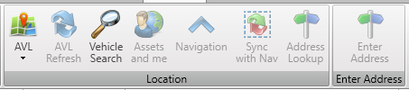
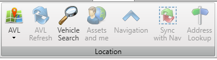
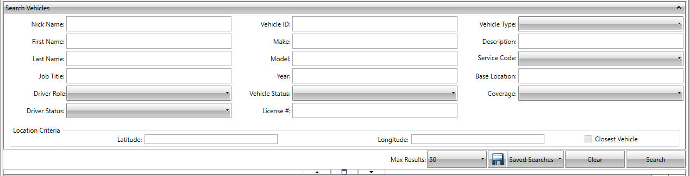

Location
The user can use the Location tab to use features such as Automatic Vehicle Location (AVL), Navigation, and Address Lookup that work on the live Global Positioning System (GPS) feeds. The user can search data using these features with the map.

AVL
The AVL feature is used to keep track of vehicles at the work site and share the same information over the application with colleagues by using the My Location menu. The user can also view the vehicle locations of other users on the map by selecting the Others Location option.
My location
The My Location menu item is to view their vehicle's location on the map.
Other's location
The user can use the My Location menu item to view the locations of their colleagues' vehicles on the map. It displays all the other vehicles in the location.
A user will only be able to see vehicles that have a service code related to his role. Any vehicle with a Supervisor/Manager tag set may only be displayed on users with a "view supervisor / manager vehicle" access right.
The following table includes the color codes used for vehicle identification on the map.
| Color code | Vehicle type |
|---|---|
| Brown | Your vehicle |
| Red | Stopped vehicle |
| Green | Moving vehicle |
| Blue | Idle vehicle |
| Yellow | Out of coverage vehicle |
| Black | Not in your search vehicle |
AVL Refresh
The user can use the AVL Refresh icon to refresh the vehicle information on the map. This refreshes the map by displaying updated vehicle information such as updated location, new vehicles in the vicinity, and removal of vehicles from the map that are no longer in the vicinity.
Search Vehicles
The user can use the Search Vehicles page to search the vehicles in the IWMS Client. The user can use this feature to view vehicle details. The user can use the search fields in combination to narrow down your search and get accurate results. If the user tries to search vehicles without providing any search criteria, the system displays all the vehicles based on your assigned AORs.
search for a vehicle.
- In the IWMS Client application, click the Location.
The Location group is displayed.

- In the Location group, click Search.
The Search Vehicles page is displayed.
 - Enter the search trouble order details in the following fields.
| Field | Description |
|---|---|
| Nick Name field | Enter a nickname. |
| First Name field | Enter a first name. |
| Last Name field | Enter a last name. |
| Job Title | Enter a job title. |
| Driver Role | Select a driver role. |
| Driver Status | Select the driver's status. |
| Vehicle ID | Type the vehicle ID. Keep the Vehicle ID box empty if you are not aware of the vehicle ID. |
| Make | Enter the vehicle make. |
| Model | Enter the vehicle model. |
| Year | Enter the vehicle manufacturing year. |
| Vehicle Status | Select a status. The available statuses for selection are IDLE, MOVING, and STOPPED. |
| License # | Enter the driver's driving license number. |
| Vehicle Type | Select a vehicle type. |
| Description | Type a vehicle description. |
| Service Code | Select a service code type. The user can select multiple service codes. If they want all the service codes in the list to be considered for the search, they should click Clear Selection. |
| Base Location | Enter a base location of the vehicle. |
| Coverage | Select a coverage. |
| Latitude | Enter the latitude coordinate. |
| Longitude | Enter the longitude coordinate. |
| Closest Vehicle | Click to search the vehicle that is closest to the latitude and longitude coordinates. |
- Click Search.
The vehicles that match the search criteria entered in the earlier steps are displayed in the grid.
Assets and Me
The user can use the Assets and me icon to view their location in relation to the highlighted assets on the map. The Assets and me icon enables the user to search the boundaries of the active selections and the location of the user, and then zooms to those boundaries. For example, if the user selects some assets but their location was off-screen, then if they click the Assets and me icon the map is zoomed so that both their location and the assets are visible.
Navigation
The user can use the Navigation icon to launch the third party software CoPilot.
Sync with Nav
The Sync with Nav icon requires a third-party GPS application (CoPilot) to be configured with the IWMS Client and CoPilot must be turned on so that the GPS signals are received. When the user clicks the Sync with Nav icon, the maps in the IWMS Client and the CoPilot are synced with each other such that the coordinates on both the maps are matched.
Address Lookup
The user can use the Address Lookup icon to find the postal address of a point on the map by entering the latitude and longitude coordinates.
Enter Address
The Enter Address group contains the Enter Address tool that enables you to enter a source or a destination address.
Enter Address
The user can use the Enter Address icon to enter a source or a destination address. To use this feature, the user must install and configure CoPilot on the same device. The IWMS Client application must be able to communicate with CoPilot. After this, the Enter Address icon is enabled in the Enter Address group. Clicking the Enter Address icon displays the Enter Address dialog box. The user can select an address as a source address or a destination address. Clicking Go after entering the address sends the location to CoPilot. If the address is verified as correct and found on the map, CoPilot turns active, and the Plan or Edit Trip page is displayed.